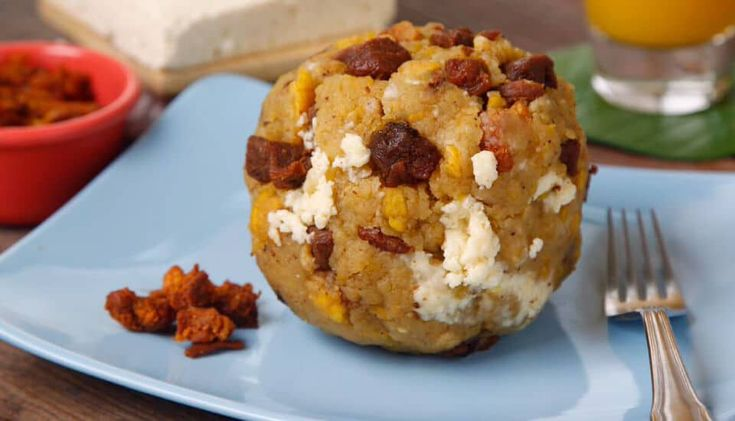

Encebollado
Un clásico manjar costeño, preparado con albacora y yuca.

Ceviche
Delicioso ceviche de camarón con limón, cebolla y tomate.

Bolón de verde
Plátano verde amasado con queso o chicharrón. Ideal para desayunar.

Seco de Pollo
Plato tradicional acompañado de arroz, aguacate y maduro frito.

Tigrillo
Mezcla de plátano majado con huevo y queso. Energía total.

Corviche
Delicia costeña hecha de verde y maní, rellena con pescado.